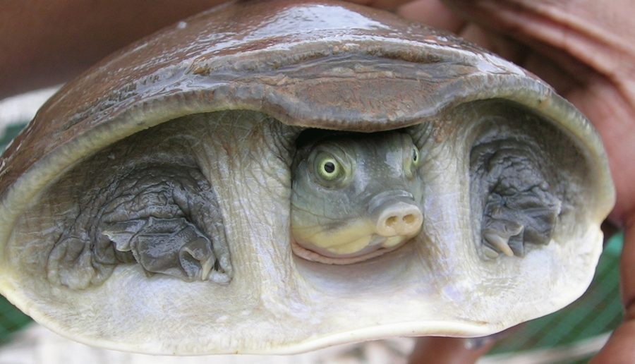

चित्तीदार कछुआIndian Flapshell Turtle
Lissemys punctata · Trionychidae · REP-0015

- Scientific name
- Lissemys punctata (Bonnaterre, 1789)
- Family
- Trionychidae
- Hindi
- चित्तीदार कछुआ
- Status here
- native
- IUCN
- VU
When to look कब देखें
Present all year.
चित्तीदार कछुआ / Indian Flapshell Turtle
Lissemys punctata (Bonnaterre, 1789) — Trionychidae
चित्तीदार कछुआ (इंडियन फ्लैपशेल टर्टल) — पूर्वी उत्तर प्रदेश के तालाबों, झीलों और नहरों में पाया जाने वाला एक बहुत ही सामान्य और मध्यम आकार का मीठे पानी का कछुआ है। इसका खोल (shell) अन्य कछुओं की तरह कड़ा न होकर नरम और चमड़े (soft and leathery) जैसा होता है। इसके निचले भाग पर त्वचा के मुड़ने वाले फ्लैप (hinged flaps) होते हैं, जो पैर समेटने पर खोल को पूरी तरह से बंद कर देते हैं, जिससे इसे इसका नाम मिला है। यह एक सर्वाहारी (omnivore) और अपमार्जक (scavenger) जीव है, जो सड़े-गले पदार्थों, मृत मछलियों और जलीय पौधों को खाकर तालाब की सफाई करता है। इसे आईयूसीएन (IUCN) द्वारा "संवेदनशील" (Vulnerable - VU) श्रेणी में वर्गीकृत किया गया है और यह वन्यजीव (संरक्षण) अधिनियम, 1972 की अनुसूची IV के तहत कानूनी रूप से संरक्षित है।
Quick Identification त्वरित पहचान
| Feature | Description |
|---|---|
| Carapace | Soft, smooth, and leathery oval shell; lacks hard, bony plates (scutes); greenish-brown with yellow spots |
| Plastron | Yellowish-white under-shell featuring hinged flaps of skin that cover and protect the hind limbs when retracted |
| Head | Small, greenish-grey, with three distinct black stripes; snout is pointed, ending in a short proboscis (tube-like nose) |
| Limbs | Flattened and webbed with three claws on each foot, adapted for swimming and burrowing in mud |
| Size | Carapace length ranges from 18 to 28 cm; weighs between 1.0 to 3.5 kg |
| Defence | Retracts its neck and limbs completely, closing the plastic flaps; stays buried under mud when disturbed |
Field tip: Scan the surface of village ponds during sunny afternoons. You may see a small, tube-like snout pointing out of the water for air. In the monsoon, they are frequently seen walking on land near water bodies. Do not collect or disturb them, as they are protected.
Morphology आकारिकी
Biometrics (typical measurements for adult specimens in local ponds of Basti):
| Measurement | Range |
|---|---|
| Straight carapace width (SCW) | 150–240 mm |
| Straight carapace length (SCL) | 180–280 mm |
| Weight | 1000–3500 g |
Carapace details: The upper shell (carapace) is smooth, oval, and lacks corneal plates. The margins of the shell are flexible. In young specimens, the carapace has numerous yellow spots, which may fade or merge into irregular olive patches in adults.
Plastron flaps: The under-shell (plastron) is cream or pale yellow. It features two large, hinged cutaneous flaps of skin near the rear that fold upward to cover the hind legs and tail, protecting them from predators.
Head and neck: The neck is extremely long and retractile, allowing the turtle to reach far to breathe or strike at prey. The eyes are small and positioned high on the head. The snout is tapered into a soft, tube-like nose (proboscis).
Behaviour & Ecology व्यवहार और पारिस्थितिकी
Semi-aquatic bottom-dweller and burrower.
- Burrowing habit: Spends most of its time buried in the soft mud at the bottom of ponds, with only its nose tip exposed to breathe.
- Estivation: Possesses a remarkable ability to survive dry seasons. If a pond dries up during the hot summer (April–June), the turtle burrows deep into the mud and enters a state of dormancy (estivation) until the monsoon rains refill the pond.
- Basking behavior: Occasionally climbs onto low banks, floating logs, or water hyacinth mats (
[FLR-0013 Jalkumbhi]) to bask in the sun, but slides into the water at the slightest sound.
Ecological Role पारिस्थितिक भूमिका
Freshwater scavenger and nutrient recycler.
- Pond cleaner: By consuming decaying organic matter, fish carcasses, and agricultural waste in village ponds, it prevents water pollution and bacterial outbreaks.
- Snail predator: It is a major predator of freshwater snails, including the Ramshorn Snail (
[MOL-0004 Ramshorn Snail]), helping control intermediate hosts of livestock parasites. - Seed disperser: Eats fruits of aquatic plants and disperses seeds in its feces, promoting aquatic vegetation diversity.
Life Cycle / Phenology जीवन चक्र
- Breeding: Mating occurs in water during the pre-monsoon and monsoon months (May–August).
- Nesting: The female crawls onto land at night, digs a flask-shaped hole in soft soil close to the water, and lays a clutch of 10 to 30 round, hard-shelled white eggs.
- Incubation & Hatching: The eggs hatch after 90–120 days. Hatchlings are highly colorful, with bright yellow spots on a dark green shell, measuring 3–4 cm in shell length.
Host Plants or Prey आहार
Omnivorous scavenger diet:
- Animal prey: Aquatic snails (
[MOL-0004 Ramshorn Snail]), small fish (such as[FSH-0015 Pool Barb],[FSH-0012 Elongate Glassy Perchlet]), frogs, tadpoles, crabs ([CRU-0003 Jacquemont's Field Crab]), and insect larvae. - Plant diet: Roots, stems, and leaves of aquatic plants (such as lotus
[FLR-0005 Kamal]and water lily). - Scavenging: Decaying fish and animal carcasses.
Predators / Natural Enemies शत्रु
- Nesting predators: Jackals (
[MAM-0004 Golden Jackal]), monitor lizards ([REP-0002 Bengal Monitor]), and feral dogs dig up nests to eat the eggs. - Hatchling predators: Large predatory fish (such as
[FSH-0009 Great Snakehead]), herons, egrets, and birds of prey hunt small hatchling turtles.
Agricultural / Human Relevance कृषि प्रासंगिकता
Conservation status and illegal trade.
- Legal Protection: Protected under Schedule IV of the Wildlife Protection Act, 1972, making it illegal to capture, kill, or trade these turtles.
- Threats: Despite protection, the species faces serious threats from illegal poaching for its meat and shells, which are smuggled to East Asian markets. Pollution of village ponds and wetland drainage for agriculture also restrict its habitat.
- Water quality aid: Because they clean village ponds, local farmers traditionally respect turtles as natural water purifiers, discouraging their capture.
Expected Locally स्थानीय रूप से अपेक्षित
Not a field record. Written from published accounts for eastern Uttar Pradesh. No confirmed local sighting yet — if you have seen it, that is what the atlas needs.
अभी तक स्थानीय पुष्टि नहीं। यह विवरण प्रकाशित स्रोतों से है, किसी अवलोकन से नहीं।
Commonly found in permanent and semi-permanent village ponds (pokhra) in Vikrampur and Vikramjot blocks of Basti district. Sighted often in the margins of slow drainage channels during the monsoon season. They are occasionally found crossing roads after heavy rains.
Distribution वितरण
Global range: Native to South Asia, distributed across Pakistan, India, Nepal, Bangladesh, Myanmar, and Sri Lanka.
In India: Widespread in all major river basins, including the Indus, Ganga, Mahanadi, and Godavari systems.
In Uttar Pradesh: Abundant in plain wetlands, ponds, and slow river streams.
In Basti district / eastern UP: Common resident in all wetland and agricultural plain zones.
Research Questions शोध प्रश्न
- How does the presence of Lissemys punctata in a village pond affect the density of intermediate host snails (
[MOL-0004 Ramshorn Snail])? / गांव के तालाब में चित्तीदार कछुए की उपस्थिति से चपटे घोंघे की जनसंख्या पर क्या प्रभाव पड़ता है? - What is the survival rate of Lissemys punctata nests in agricultural borders compared to pond banks in Basti? / तालाब के किनारों की तुलना में कृषि खेतों की मेड़ों पर कछुओं के अंडों के सुरक्षित रहने की दर क्या है?
- Does the concentration of heavy metals in the tissue of Lissemys punctata serve as an indicator of pesticide runoff in agricultural wetlands?
- How long can Lissemys punctata survive in dry mud during summer estivation under high heat conditions?
- Can local school children count and record the number of turtles seen breathing at the surface of a pond during different hours of the day? — A simple population monitoring activity.
Similar Species मिलती-जुलती प्रजातियाँ
| Species | Key Difference | हिंदी |
|---|---|---|
Nilssonia gangetica (Indian Softshell Turtle [REP-0009]) | Much larger (carapace up to 90 cm); lacks the cutaneous plastron flaps that cover the hind legs; head has dark stripes and a black collar; restricted to larger rivers. | गंगा सॉफ्टशेल कछुआ — बहुत बड़ा आकार, नदी का आवास |
| Pangshura tecta (Indian Roofed Turtle) | Has a hard, high, tent-like bony carapace with a distinct keel and red markings; has standard hard plates (scutes); lacks plastron flaps. | छोटा कछुआ — कड़ा खोल, उभरी हुई पीठ |
Taxonomy & Classification वर्गीकरण
Original description. Pierre Joseph Bonnaterre described the Indian Flapshell Turtle as Testudo punctata in 1789 in Tableau encyclopédique et méthodique des trois règnes de la nature. Erpétologie (p. 30). The type locality was India. It was later moved to the genus Lissemys by Fitzinger in 1843. The genus name Lissemys is derived from the Greek lissos (smooth) and emys (freshwater turtle). The specific name punctata is Latin for "dotted" or "spotted," describing the yellow spots on the carapace.
Subspecies. The population in northern India and the Ganga basin belongs to the nominate subspecies, Lissemys punctata punctata (Bonnaterre, 1789).
Family and order placement. Placed in the order Testudines, suborder Cryptodira, family Trionychidae, subfamily Cyclanorbinae.
Phylogenetic notes. The family Trionychidae contains all softshell turtles. The genus Lissemys belongs to the subfamily Cyclanorbinae, which is characterized by the presence of protective plastron flaps, representing an evolutionary transition toward enhanced limb protection.
IUCN status rationale. Listed as Vulnerable (VU) by the IUCN Red List due to high rates of habitat loss, wetland degradation, pesticide accumulation, and ongoing illegal poaching for trade and local consumption across its range.
Photo Gallery फोटो गैलरी
References संदर्भ
- Bonnaterre, P. J. (1789). Tableau encyclopédique et méthodique des trois règnes de la nature. Erpétologie. Panckoucke, Paris, p. 30. [original description]
- Smith, M.A. (1931). The Fauna of British India, including Ceylon and Burma: Reptilia and Amphibia. Vol. 1 — Loricata, Testudines. Taylor & Francis, London.
- Daniel, J.C. (2002). The Book of Indian Reptiles and Amphibians. Bombay Natural History Society, Mumbai.
- Webb, R. G. (1980). The trionychid turtle Lissemys punctata (Bonnaterre, 1789) (Reptilia, Testudines). Amphibia-Reptilia, 1(3/4): 211-222.
- IUCN SSC Tortoise and Freshwater Turtle Specialist Group (2024). Lissemys punctata. IUCN Red List of Threatened Species.
- GBIF Occurrence Data — Lissemys punctata, South Asia (2026). GBIF taxon key: 2442758.
Source file: species/fauna/reptiles/indian_flapshell_turtle.md